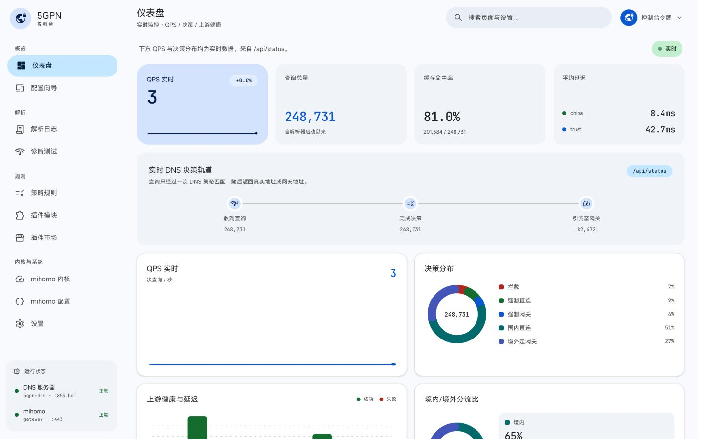

接入
客户端把全部 DNS 查询经 DoT :853 交给网关——唯一入口，证书自动续期、热重载。
开源 · MIT · DNS 与控制面同进程
直出型智能分流 DNS / SNI 网关。一次解析决定每条流量直连还是走网关——客户端只需填一个 DoT 域名，无需安装任何 App。
需配合 KFCHost 与 5GPN 订阅包 使用
安装 · 网关侧
在一台 root 权限的 Linux 网关上执行。交互式问答收集证书模式、基础域名与证书邮箱（Cloudflare 模式另需 token），公网与网关 IP 默认自动确定。
$ curl -fsSL https://raw.githubusercontent.com/moooyo/5gpn/main/quick-install.sh | sudo bash
也可在 checkout 内运行 sudo bash install.sh；默认使用稳定频道，更新时保留已校验的运维配置并在失败时自动回滚。
原理 · 一次解析的旅程
有序策略按 block / direct / proxy 首条命中，未命中时交给 fallback。网关目标解析成网关 IP 并进入 mihomo；直连目标返回真实 IP。
客户端把全部 DNS 查询经 DoT :853 交给网关——唯一入口，证书自动续期、热重载。
有序策略按 block / direct / proxy 首条命中；未命中时由 auto / direct / gateway fallback 接管。
判定直连的域名返回真实 IP，客户端直连，网关不经手。
auto fallback 并发查询境内组与可信组，按 chnroute 仲裁；网关目标再由 mihomo 承载。
策略跨 intent 全局有序 · chnroute 按答案 IP 归属判定，而非谁先应答
去向 · DNS 判定，mihomo 承载
命中 direct 策略或 auto fallback 判定境内的域名，返回真实 IP——客户端直连，网关完全不经手。
网关目标自然漏斗进 mihomo；节点、分组、规则与传输始终由运营者自己的完整 mihomo 配置拥有。
mihomo -t 校验后原子写盘并请求热应用DNS 策略不选择节点或分组 · 插件需要的出口也必须由运营者显式绑定
特性
核心服务无 Python、预编译交付、边界显式，一切行为可预期。
并发查询境内组与可信组，按答案 IP 归属判定直连或走网关，不是抢答竞速。
客户端唯一的 DNS 传输是 DoT :853，Let's Encrypt 证书按文件 mtime 热重载、自动续期；Android / iOS 原生支持。
block / direct / proxy 跨类型按顺序首条命中；订阅按各自 interval 更新，失败继续使用上次有效快照。
Web Console、REST API 与 Telegram bot 共用同一进程内 Controller 和领域管理器；同一服务还分发 iOS 描述文件。
市场只负责发现；插件以严格 5gpn.io/v1 快照安装，接管域名及其解析器、路由规则与权限审查后再启用。
网关不放编译工具链；发布产物固定版本并强制校验 SHA-256，systemd 硬化、状态原子持久化、生产证书按角色自动续期。
接入 · 三步
一行命令交互式问答；自动下载预编译产物、签发并续期证书、拉起 systemd 服务，结束时打印控制台地址与 token。
回到安装命令Android：设置 → 私人 DNS，填 dot.<域名>；iOS：扫安装结束打印的二维码，装 DoT 描述文件。
本地直连、网关出站按有序策略生效。订阅在进程内定时更新，拉取失败保留上次有效快照。
控制台 · Web / Telegram
Web Console 通过 REST API 与 Telegram bot 共用同一进程内 Controller 和领域管理器；同一服务还分发 iOS 描述文件。浏览器访问 https://console.<域名>/ 即达。

插件市场 · 发现不等于信任
5GPN 不预置任何市场。添加或刷新 5gpn.io/marketplace/v1 来源只缓存受限的发现元数据，不会安装、更新或启用插件。选择条目后，网关会重新抓取 manifest 与脚本，核验身份、摘要、大小与路由规则数量，再保存默认禁用的不可变快照。
CLI · 一个命令
安装完成后，以 root 权限运行 5gpn 打开交互管理菜单，或带子命令直接执行。安装参数主要集中在 /etc/5gpn/dns.env，Cloudflare 凭据单独保存；策略、订阅、插件与市场状态按领域原子持久化。
$ sudo 5gpn# 打开交互管理菜单$ sudo 5gpn status# 服务 / 域名 / 列表状态$ sudo 5gpn configure# 编辑安装与证书配置$ sudo 5gpn reload-rules# 重载策略缓存与 chnroute$ sudo 5gpn setup-tgbot# 校验并热应用 Telegram bot$ sudo 5gpn rotate-token# 轮换控制台令牌$ sudo 5gpn ios# 重新生成 iOS 描述文件 + 二维码